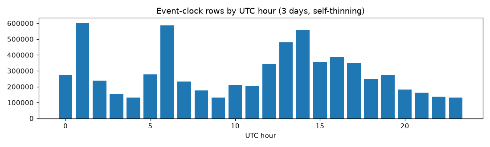
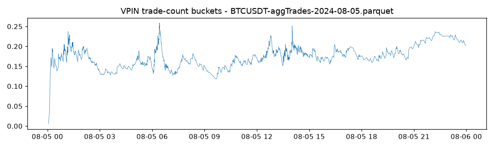

Data & Machinery.
Everything on this page is infrastructure: no predictive claim is tested here, no hazard model is run on the free data, and no C5/C6 proxy is substituted. The purpose of this phase is that the L2 test runs flawlessly on day one — so every stage is built, unit-tested, and dry-run on real ticks first.
The honest data inventory (verified, not assumed)
| Dataset | Resolution | Span | Provenance | Order-flow content |
|---|---|---|---|---|
| 5 US ETFs (SPY, QQQ, IWM, XLE, XLF) | daily OHLCV | 2021-11 → present | genuine volume | none |
| ~156 crypto pairs (TradingView-contracted) | daily OHLCV | 2021-11-12 → present (~326k rows) | volume frequently synthetic, unverifiable per pair — all volume features flagged proxies | none |
| Binance USDT-M BTCUSDT aggTrades (free public archives) | tick, signed | Aug 3–5 2024 ingested (8.8M trades, incl. the carry-unwind crash) | genuine exchange data | trade flow only: aggressor sign, intensity, imbalance |
| Binance bookDepth (free archives) | 5s snapshots, ±1–5% bands | Aug 5 2024 | genuine | none — snapshots destroy the update sequence; syntax-check use only |
| Full-depth incremental L2 + signed trades (Tardis) | event-level | pending procurement | — | the only data that unblocks Layers 0–2 and claims C5/C6 |
Stage 1 — Ingestion (src/binance_ingest.py)
Loads Binance public archives (CSV or zip, daily or monthly, header and headerless legacy files) into normalized Parquet. The strict rules, enforced by code and tested by 9 unit tests:
- Timestamps: UTC epoch microseconds, int64, exact ms×1000 — no float intermediates; a coercion failure or NaN kills the file; out-of-order rows are stably sorted with a reported warning, never silently dropped.
- Direction: binary int8
aggressor_buy(1 = aggressor buys, 0 = sells), mapped fromis_buyer_maker; any non-binary literal rejects the file. No third state, no NaN. - Integrity: price > 0, qty ≥ 0, bid ≤ ask (a crossed row rejects the file), monotone timestamps.
Stage 2 — The L2 verification gate (src/verify_l2_gate.py)
Runs first on any arriving L2 dataset. Fails loudly (exit 1, "GATE FAILED") if the data is corrupted; nothing downstream may run until it passes.
- Reconstruction: the book is rebuilt from
sequence-numbered diffs (Binance U/u/pu or Tardis-style operation schema;
unknown schemas are refused, not guessed). A gap (
pu != last u) is logged togaps.logwith timestamps and sequence ids, and the book is invalid until the next resync — never patched. - Comparison at 100 random timestamps: mid within one tick, and depth within 10bps of mid (per side, within 1% relative tolerance), against exchange REST snapshots — or, if snapshots are unavailable, a flagged fallback built from the diff stream itself that validates internal sequence consistency only, not exchange agreement.
- Gate criteria: sequence gap rate < 0.01%; mid agreement ≥ 99%; depth agreement ≥ 99%.
Failure paths are unit-tested: an injected sequence gap → gate fails and the gap is written to the log; a displaced snapshot sample → gate fails; unknown schema → refusal.
Stage 3 — The event clock (src/event_clock.py)
State-change rows, not calendar rows: one row per best-bid/ask change (or per trade state change on the free data). The clock self-thins dead sessions — no events, no rows, no hazard estimated from frozen liquidity.
Dry-run evidence on 8.8M real trades
| Day | Trades | Clock rows | % of trades | Rows/hour min (dead) | Rows/hour max (peak) |
|---|---|---|---|---|---|
| Aug 3 2024 | 1,306,613 | 914,590 | 70.0% | 12,755 (07h) | 128,726 (16h) |
| Aug 4 2024 | 1,405,551 | 1,005,975 | 71.6% | 9,638 (06h) | 167,915 (17h) |
| Aug 5 2024 (crash) | 6,088,369 | 4,899,525 | 80.5% | 60,589 (22h) | 563,228 (06h) |
Kill line (≥ 10,000 rows/day): PASS — two orders of magnitude above the floor, with a 10–58× hourly spread confirming self-thinning.

Stage 4 — Purged combinatorial CV + embargo
Purge is on the label horizon (wall-clock), with an embargo after the test window — because the leak channel is the label. A training row is purged if its label window [t0, t0+H] intersects the test window extended by the embargo on both sides.
Zero-leakage proof on 6,820,090 real event-clock rows
| Split | Test rows | Train rows | Purged | Index intersections | Label-window overlaps |
|---|---|---|---|---|---|
| 0 | 1,136,681 | 5,648,885 | 34,524 | 0 | 0 |
| 1 | 1,136,682 | 5,095,478 | 587,930 | 0 | 0 |
| 2 | 1,136,682 | 4,653,810 | 1,029,598 | 0 | 0 |
| 3 | 1,136,681 | 4,588,133 | 1,095,276 | 0 | 0 |
| 4 | 1,136,682 | 4,893,777 | 789,631 | 0 | 0 |
| 5 | 1,136,682 | 4,784,652 | 898,756 | 0 | 0 |
The overlap check asserts the exact complement of the purge condition against the raw test bounds — not a weaker re-check. Purge counts behave correctly: near zero at chronological edges, up to 1.1M rows purged in interior splits where label horizons overlap the test window on both sides.
Stage 5 — Feature calculators (descriptive only, src/features.py)
Built and dry-run on real ticks to prove the math runs without crashing or NaNs. No hazard model consumes them yet; no predictive claim is tested.
VPIN on trade-count buckets
Per directive, buckets are trade-count sized (5,000 trades), EWMA-50 over bucket imbalance |buy−sell|/total. All three days clean (zero NaNs). The crash day's distribution widens and drives a deep left tail (min 0.005 — near-one-sided buckets during the liquidation cascade).

| Day | Buckets | VPIN min | mean | max | NaN |
|---|---|---|---|---|---|
| Aug 3 | 261 | 0.123 | 0.184 | 0.262 | 0 |
| Aug 4 | 281 | 0.029 | 0.177 | 0.228 | 0 |
| Aug 5 | 1,217 | 0.005 | 0.178 | 0.259 | 0 |
Multivariate Hawkes (2-dim: buy trades, sell trades)
Exponential-kernel Hawkes, exact log-likelihood via recursive R-sums, time
in seconds, positive log-space parameters, branching ratio constrained <
0.95, L-BFGS-B with a Nelder-Mead fallback. The estimator needed three real
fixes during the dry run — the spectral radius must be
max|eig| (a complex-aware measure, not lexicographic max), the
time axis must be seconds, and the parameters must be bounded — and the fixes
are on the record:
| Window | n events | Branching ratio | Excitation half-life | Optimizer |
|---|---|---|---|---|
| CALM Aug 4, 12:00–12:10 UTC | 7,263 | 0.9500 | 0.347 s | Nelder-Mead fallback |
| CRASH Aug 5, 00:00–00:10 UTC | 18,848 | 0.9500 | 0.347 s | Nelder-Mead fallback |
Top-of-book OFI, and the bookDepth syntax check
The Cont–Kukanov–Stoikov touch-level OFI is implemented and validated on synthetic bookTicker frames (correct signed response to every touch-move case, unit-tested). Because Binance publishes no bookTicker archive, the real-data run used the bookDepth band proxy strictly as a syntax check — 28,800 snapshot rows → 2,879 diffs, no NaN, not plotted as meaningful and not treated as OFI: 5-second snapshots destroy the update sequence, and a snapshot stream cannot separate fills from cancels.
Stage 6 — The C1-L2 harness (src/c1_l2_test.py)
The hazard-model skeleton, implementing the exact agreed transition rules, with mock L2 data so it compiles and the machinery is mechanically exercised. Per directive, no run on mock data is reported as a result — the only legal run is on gated Tardis data. The rules, implemented literally:
- Mid sampled at every BBBA change.
- Compression = 4h realized range in σ_H units, percentile-ranked against the trailing 5-day pool of the same hour-of-day bucket.
- Trade-touch labels only, with a ≥ 10× median-spread noise floor on barriers.
- Purge/embargo on the wall-clock label horizon (reusing the zero-leakage-proven CPCV).
- Hour-of-day stratification as a mandatory control.
All five kill lines are raising asserts — the harness physically throws if a kill line fires, naming the dead mechanism. A unit test fires each of the five individually and confirms the pass-case passes.
The macro timeline (data/macro_timeline.csv)
A hand-curated calendar of structural events — FOMC (32 meetings 2021–2024
with verified dates), CPI (month-level with exact dates copied from the BLS
schedule, never from memory — a wrong CPI date poisons event-window censoring),
and 22 crypto-specific events from the verified public record (ETF approvals,
the halving, exchange failures, regulatory actions). Schema and population
checklist in docs/.
Its role is interpretive, never predictive:
event-window stratification (is the compression clock measuring liquidity
aging, or proximity to a scheduled announcement?), censoring around known
release times, and the honest separation of endogenous market structure from
scheduled information arrival. Two binding rules: times are UTC only, and
surprise_note is filled after the event — look-ahead by
construction, and can never be a model input.
Test suite
27 tests, all green, including deliberate failure-path tests: sequence-gap rejection, crossed-book rejection, mid-disagreement rejection, unknown-schema refusal, CPCV leakage assertions, and each kill line fired individually. The infrastructure is built to fail loudly, and the tests prove it does.